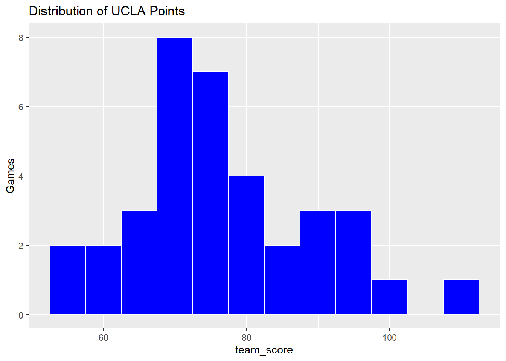
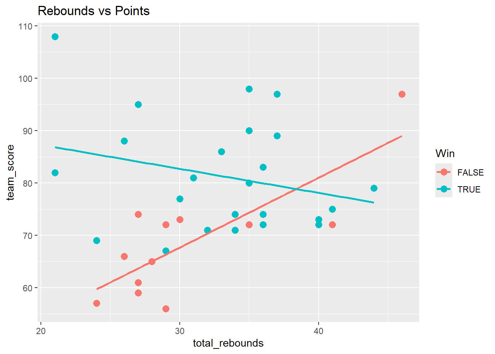
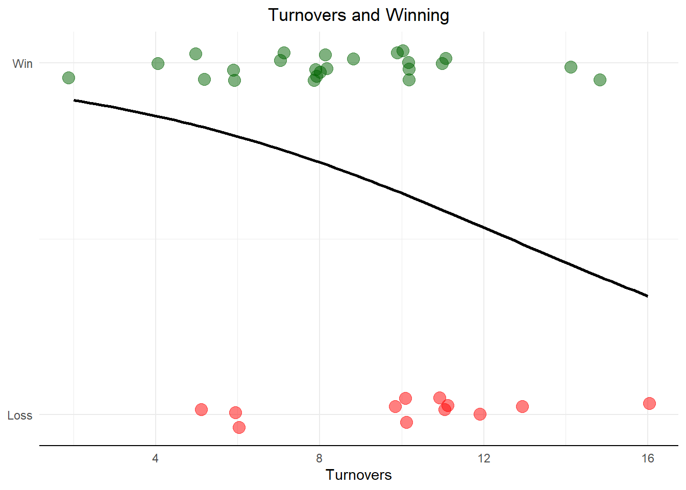

# Provides a summary in a row of individual statsUCLA |>summarize(AvgPoints =mean(team_score),ThreePtFgPct =mean(three_point_field_goal_pct),AvgFtPct =mean(free_throw_pct),AvgOffRebounds =mean(offensive_rebounds),AvgTurnovers =mean(turnovers) )
# Visualize points scored. Creates a histogramggplot(UCLA, aes(x = team_score))+geom_histogram(binwidth =5,fill ="blue",color ="white")+labs(title ="Distribution of UCLA Points",x ="team_score",y ="Games" )

# Relationship between total rebounds and team points per gameggplot(UCLA,aes(total_rebounds, team_score,color =factor(team_winner))) +geom_point(size =3) +geom_smooth(method ="lm", se =FALSE) +labs(color ="Win",title ="Rebounds vs Points" )

Interpretation- From the graph it appears that the more rebounds UCLA gets during the game the higher their team score will be. They tend to lose more games if rebounding is lacking.
Here is a snapshot of the first 10 rows of the data set
A single numeric predictor using logistic regression. I want to determine if team turnovers influences whether or not the team actually wins or not.
model <-glm(team_winner ~ turnovers,data = UCLA,family = binomial)summary(model)
Call:
glm(formula = team_winner ~ turnovers, family = binomial, data = UCLA)
Coefficients:
Estimate Std. Error z value Pr(>|z|)
(Intercept) 2.5407 1.2680 2.004 0.0451 *
turnovers -0.2008 0.1285 -1.562 0.1182
---
Signif. codes: 0 '***' 0.001 '**' 0.01 '*' 0.05 '.' 0.1 ' ' 1
(Dispersion parameter for binomial family taken to be 1)
Null deviance: 45.829 on 35 degrees of freedom
Residual deviance: 43.114 on 34 degrees of freedom
AIC: 47.114
Number of Fisher Scoring iterations: 4
Interpretation of model:
Total turnovers = player turnovers + team turnovers. The -2.008 tells us that the more turnovers a team commits per game the less their chances of winning, which is expected. The botton line is that turnovers do hurt, but by themselves they are a weak predictor of whether of not UCLA wins or not. The p value is above the 0.05 threshold which tells us that model is not statistically significant. So while the trend points the right way, with only 36 games you can’t confidently rule out that this pattern is just noise.The data leans toward ‘turnovers hurt,’ but with only 36 games, a pattern this size would appear by pure chance about 1 time in 8 — too often to treat it as proven.”
# Plot: each dot is a game (top = win, bottom = loss).# The curve is the model's predicted probability of winning.UCLA |>ggplot(aes(x = turnovers, y =as.numeric(team_winner))) +geom_jitter(aes(color = team_winner),height =0.05, width =0.2, alpha =0.5, size =4) +geom_smooth(method ="glm",method.args =list(family = binomial),se =FALSE,color ="black") +scale_color_manual(values =c("FALSE"="red", "TRUE"="darkgreen")) +scale_y_continuous(breaks =c(0, 1), labels =c("Loss", "Win")) +labs(title ="Turnovers and Winning",x ="Turnovers" ) +theme_minimal() +theme(legend.position ="none",axis.line.x =element_line(color ="black"),plot.title =element_text(hjust =0.5),axis.title.y =element_blank() )

The big picture: a downward slope. The black curve starts high on the left and drifts lower as turnovers increase. That’s the model saying: the fewer turnovers UCLA commits, the better their chances of winning. At the low-turnover end the predicted win probability is quite high (80–90%); by the high-turnover end it’s dropped substantially. The direction matches basketball common sense — giving the ball away costs you games.
But look at how much the colors overlap. If turnovers strongly decided games, you’d see clean separation: green dots (wins) bunched on the left, red dots (losses) bunched on the right. Instead, green and red dots are mixed across almost the whole turnover range — UCLA won games while committing 14–15 turnovers and lost at least one game with only 5. That overlap is the plot telling you turnovers alone don’t decide outcomes.
What the model says (win ~ turnovers, 36 games):
The turnovers coefficient is −0.20 — each extra turnover lowers the log-odds of winning, so the direction is what you’d expect: more turnovers, lower win probability. You can see this in the plot’s downward curve.
But the p-value is 0.118, so it’s not statistically significant at the 0.05 level. With only 36 games and a 24–12 record, there isn’t enough data to say confidently that turnovers alone predict wins — notice in the plot that UCLA won games with 14–15 turnovers and lost one with only 5.
model <-glm(team_winner ~ turnovers, data = UCLA, family = binomial)ucla_ball <-data.frame(turnovers =seq(min(UCLA$turnovers, na.rm =TRUE),max(UCLA$turnovers, na.rm =TRUE),length.out =500))ucla_ball$prob <-predict(model, newdata = ucla_ball, type ="response")plot_ly(data = ucla_ball,x =~turnovers,y =~prob,type ='scatter',mode ='lines') %>%layout(title ="Team Wins vs Turnovers",xaxis =list(title ="Turnovers"),yaxis =list(title ="Probability of Winning") )
# Logistic Regression# Predicts whether UCLA wins a game# team_winner is the outcome variable. The other variables are the predictor variablesmodel <-glm( team_winner ~ field_goal_pct + turnovers,family = binomial,data = UCLA)summary(model)
Call:
glm(formula = team_winner ~ field_goal_pct + turnovers, family = binomial,
data = UCLA)
Coefficients:
Estimate Std. Error z value Pr(>|z|)
(Intercept) -6.88757 4.11077 -1.675 0.0938 .
field_goal_pct 0.19745 0.08681 2.274 0.0229 *
turnovers -0.15021 0.13570 -1.107 0.2683
---
Signif. codes: 0 '***' 0.001 '**' 0.01 '*' 0.05 '.' 0.1 ' ' 1
(Dispersion parameter for binomial family taken to be 1)
Null deviance: 45.829 on 35 degrees of freedom
Residual deviance: 35.734 on 33 degrees of freedom
AIC: 41.734
Number of Fisher Scoring iterations: 5
1. Shooting decides UCLA’s games. The field_goal_pct line is the only one with a significance star. When UCLA shoots a higher percentage from the field, their chance of winning goes up meaningfully — each extra percentage point boosts their odds of winning by about 22%. The p-value (0.023) says this pattern is too strong to be a coincidence. This is a real effect you can trust.
2. Turnovers hurt a little, but we can’t prove it. The negative sign on turnovers (−0.15) says more giveaways → lower win chance, which fits common sense. But the p-value (0.27) means a pattern this weak shows up by pure luck about one time in four — far too often to call it proven. In 36 games, the evidence just isn’t there.
Adding variables to the model
model <-glm(team_winner ~ field_goal_pct + free_throw_pct + total_rebounds + turnovers, data = UCLA, family = binomial)summary(model)
Call:
glm(formula = team_winner ~ field_goal_pct + free_throw_pct +
total_rebounds + turnovers, family = binomial, data = UCLA)
Coefficients:
Estimate Std. Error z value Pr(>|z|)
(Intercept) -17.46540 7.60916 -2.295 0.0217 *
field_goal_pct 0.26779 0.10637 2.518 0.0118 *
free_throw_pct 0.03355 0.03934 0.853 0.3937
total_rebounds 0.16124 0.08462 1.905 0.0567 .
turnovers -0.19707 0.17116 -1.151 0.2496
---
Signif. codes: 0 '***' 0.001 '**' 0.01 '*' 0.05 '.' 0.1 ' ' 1
(Dispersion parameter for binomial family taken to be 1)
Null deviance: 45.829 on 35 degrees of freedom
Residual deviance: 30.515 on 31 degrees of freedom
AIC: 40.515
Number of Fisher Scoring iterations: 5
What the model is doing
Field goal % — the winner. This is the only stat with a star. When UCLA shoots better, they win more, and the pattern is strong enough (p = 0.012) that it’s almost certainly real, not luck. Rule of thumb from this model: each extra percentage point of shooting raises their odds of winning by about a third.
Rebounds — so close. The p-value is 0.057, a hair above the 0.05 line (that’s the little dot marking). More rebounds looks like it helps — each one raises the odds of winning about 17% — but the evidence falls just short of the standard for calling it proven. A few more games of data would likely settle it.
Free throw % — nothing. The effect is tiny and the p-value (0.39) says it could easily be chance. How UCLA shoots from the line doesn’t distinguish their wins from their losses.
Turnovers — hurts, but can’t prove it. Negative direction as expected (each turnover trims the win odds ~18%), but p = 0.25 means it’s far from significant. Once the model already knows how UCLA shot and rebounded, the turnover count adds little.
Is the model any good overall? Yes. The “deviance” dropping from 45.8 (guessing with no stats) to 30.5 (with your four stats) is a substantial improvement — these stats collectively explain a lot about why UCLA wins and loses.
Predicting the probability UCLA wins based on FG%, FT%, rebounds, and turnovers.
Coefficients Table — The Most Important Part
Predictor
Estimate
Meaning
(Intercept)
-17.47
Baseline log-odds when all stats = 0 (not meaningful on its own)
field_goal_pct
+0.268
Higher FG% increases win probability
free_throw_pct
+0.034
Small positive effect
total_rebounds
+0.161
More rebounds slightly increases win probability
turnovers
-0.197
More turnovers decreases win probability
The sign (+/-) is what matters most:
Positive = that stat helps UCLA win
Negative = that stat hurts UCLA’s chances
Statistical Significance (the p-values)
Predictor
P-value
Significant?
field_goal_pct
0.0118
YES ✓ — marked with *
free_throw_pct
0.3937
No
total_rebounds
0.0567
Borderline — marked with .
turnovers
0.2496
No
Only field_goal_pct is statistically significant at the standard 0.05 threshold. This means it is the only predictor you can confidently say has a real effect on winning.
Signif. Codes Guide
*** p < 0.001 Very highly significant
** p < 0.01 Highly significant
* p < 0.05 Significant <- field_goal_pct is here
. p < 0.10 Borderline <- total_rebounds is here
(blank) p > 0.10 Not significant
Model Fit
Value
What it means
Null deviance: 45.83
How bad the model is with NO predictors
Residual deviance: 30.52
How bad the model is WITH your predictors
Difference: 15.3
How much your predictors improved the model
AIC: 40.515
Used to compare models — lower is better
The drop from 45.83 to 30.52 is a good sign — your predictors are doing meaningful work.
Bottom Line
Field goal percentage is the only statistically significant predictor of UCLA winning. Every 1% increase in FG% meaningfully increases the probability of a win. Free throw percentage, rebounds, and turnovers trend in the right direction but don’t reach statistical significance — likely because UCLA only has 36 games of data, which is a small sample size.
Interpretation
Positive coefficient for FG_Pct- better shooting increases win probability
Negative coefficient for Turnovers- more turnovers decreases win probability
# Predict Win probability# Percentages in this data are on the 0-100 scale, so 48 means 48%new_game <-data.frame(field_goal_pct =48,total_rebounds =38,turnovers =10,free_throw_pct =80)predict(model,newdata = new_game,type ="response")
1
0.9028348
# Build a fuller model with more predictorsfull_model <-glm( team_winner ~ field_goal_pct + three_point_field_goal_pct + free_throw_pct + assists + turnovers + total_rebounds,data = UCLA,family = binomial # this is what makes it a probability)# Predict — type = "response" gives you a 0 to 1 probabilitynew_game <-data.frame(field_goal_pct =45,three_point_field_goal_pct =36,free_throw_pct =75,assists =16,turnovers =10,total_rebounds =35)predict(full_model, newdata = new_game, type ="response")
1
0.7377531
Under this model UCLA has a 73.7% chance of winning a game.
# Correlation analysis# This analysis helps to identify which variables are most strongly associated# with scoringcor(UCLA[, c("team_score","field_goal_pct","three_point_field_goal_pct","free_throw_pct","turnovers","total_rebounds")],use ="complete.obs")
Every 1% increase in field goal-percentage is associated with higher scoring
Turnovers are associated with fewer points
Rebounds contribute positively to offensive production
The output above is the correlation matrix. Here’s how to read it:
How to read it
Values range from -1 to +1
Closer to +1 = strong positive relationship
Closer to -1 = strong negative relationship
Close to 0 = little to no relationship
The diagonal is always 1.0 (a stat perfectly correlates with itself)
What your UCLA data is telling you
Strongest positive correlations with team_score:
Stat
Correlation
Meaning
field_goal_pct
+0.58
Strongest predictor — shoot better, score more
free_throw_pct
+0.46
Second strongest — FT efficiency matters
three_point_field_goal_pct
+0.36
Moderate — 3PT shooting helps scoring
total_rebounds
+0.18
Weak — rebounds alone don’t guarantee points
Negative correlations with team_score:
Stat
Correlation
Meaning
turnovers
-0.38
More turnovers = fewer points (makes sense)
Key takeaways for UCLA
Field goal % is the #1 scoring driver — when UCLA shoots well from the field, they score more
Turnovers hurt — the -0.38 is meaningful, giving the ball away directly costs points
Rebounds are a weak predictor — getting more rebounds doesn’t strongly translate to scoring for this team
FG% and 3PT% are related (+0.48) — makes sense since 3-pointers are a subset of field goals
Rule of thumb for correlation strength
Range
Strength
0.00 – 0.19
Very weak
0.20 – 0.39
Weak
0.40 – 0.59
Moderate
0.60 – 0.79
Strong
0.80 – 1.00
Very strong
By this scale, only FG% has a moderate correlation with scoring for UCLA — everything else is weak to moderate, which suggests scoring comes from a combination of factors rather than any single stat dominating.
model <-glm(team_winner ~ turnovers * field_goal_pct,data = UCLA,family = binomial)summary(model)
Call:
glm(formula = team_winner ~ turnovers * field_goal_pct, family = binomial,
data = UCLA)
Coefficients:
Estimate Std. Error z value Pr(>|z|)
(Intercept) 3.86598 10.78265 0.359 0.720
turnovers -1.41256 1.24227 -1.137 0.256
field_goal_pct -0.04325 0.23374 -0.185 0.853
turnovers:field_goal_pct 0.02836 0.02736 1.037 0.300
(Dispersion parameter for binomial family taken to be 1)
Null deviance: 45.829 on 35 degrees of freedom
Residual deviance: 34.764 on 32 degrees of freedom
AIC: 42.764
Number of Fisher Scoring iterations: 5